power1d.geom¶
One-dimensional (1D) continuum geometry primitives.
The classes in this module represent a set of building blocks for constructing 1D baselines and signals.
More complex 1D geometries can be constructed by combining multiple primitives through the standard operators: + - * / **
The figure below provides an overview of all geometric primitive types. Details regarding reach are listed below.
(Source code, png, hires.png, pdf)


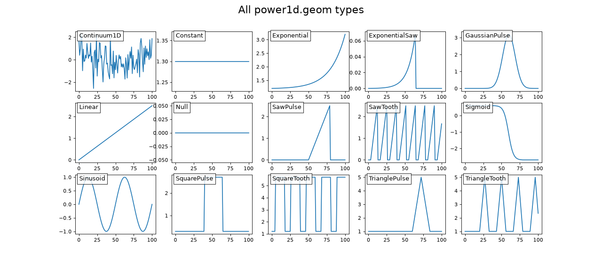
from_array¶
- power1d.geom.from_array(x)¶
Create Continuum1D geometry object(s) from a 1D or 2D array.
Arguments:
x —- 1- or 2-dimensional numpy array
Outputs:
obj —- a Continuum1D object
Example:
import numpy as np import power1d x = np.random.rand( 101 ) obj = power1d.geom.from_array( x ) # Continuum1D object obj.plot() x = np.random.rand( 5, 101 ) objs = power1d.geom.from_array( x ) # list of Continuum1D objects [obj.plot() for obj in objs]
(
Source code,png,hires.png,pdf)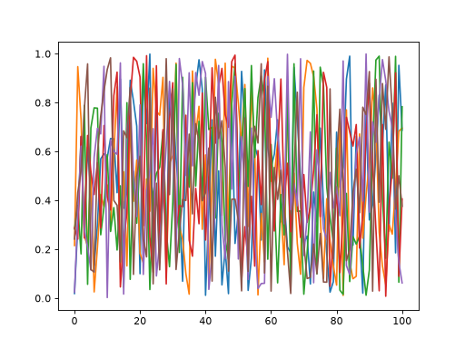


from_file¶
- power1d.geom.from_file(fpath)¶
Create Continuum1D geometry object(s) from a CSV file.
Only CSV files are currently supported.
1D arrays can be saved as either a single row or a single column in a CSV file.
2D arrays must be saved with shape (nrow,ncol) where nrow is the number of 1D arrays and each row will be converted to a Continuum1D object
Arguments:
fpath —- full path to a CSV file
Outputs:
obj —- a Continuum1D object
Continuum1D¶
- power1d.geom.Continuum1D(value)¶
Manually defined one-dimensional continuum geometry.
Arguments:
value —- one-dimensional numpy array
Example:
import numpy as np import power1d value = np.random.rand( 101 ) obj = power1d.geom.Continuum1D( value ) obj.plot()
(
Source code,png,hires.png,pdf)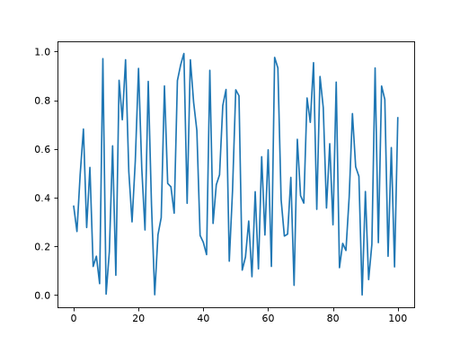


Constant¶
- power1d.geom.Constant(Q=101, amp=0)¶
Constant value continuum with amplitude amp.
Keyword arguments:
Q —- continuum size (int) (default: 101)
amp —- continuum value (float or int) (default 0)
Example:
import power1d obj = power1d.geom.Constant(Q=101, amp=1.3) obj.plot()
(
Source code,png,hires.png,pdf)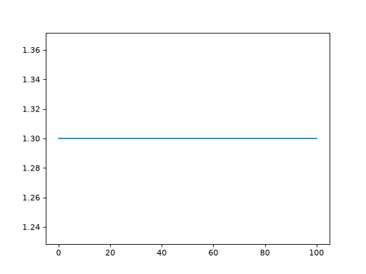


Exponential¶
- power1d.geom.Exponential(Q=101, x0=0, x1=1, rate=1)¶
Exponentially increasing (or decreasing) continuum
Keyword arguments:
Q —- continuum size (int) (default: 101)
x0 —- value at starting continuum point (float or int) (default 0)
x1 —- value at ending continuum point (float or int) (default 1)
rate —- rate of exponential increase (float or int) (default 1)
Example:
import power1d obj = power1d.geom.Exponential(Q=101, x0=0.3, x1=3.6, rate=2.8) obj.plot()
(
Source code,png,hires.png,pdf)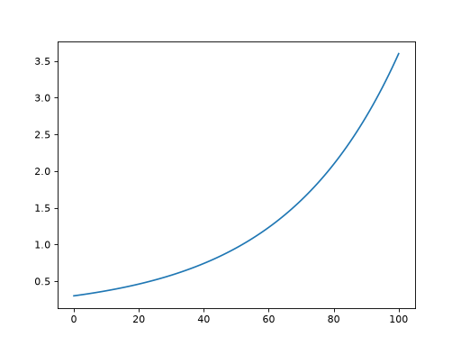


ExponentialSaw¶
- power1d.geom.ExponentialSaw(Q=101, x0=0, x1=1, rate=1, cutoff=70)¶
Exponentially increasing (or decreasing) continuum with a saw cutoff
Keyword arguments:
Q —- continuum size (int) (default: 101)
x0 —- value at starting continuum point (float or int) (default 0)
x1 —- value at ending continuum point (float or int) (default 1)
rate —- rate of exponential increase (float or int) (default 1)
cutoff —- continuum point at which the continuum returns to x0 (int) (default 70)
Example:
import power1d obj = power1d.geom.ExponentialSaw(Q=101, x0=0.3, x1=3.6, rate=2.8, cutoff=85) obj.plot()
(
Source code,png,hires.png,pdf)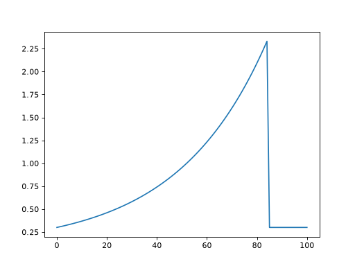


GaussianPulse¶
- power1d.geom.GaussianPulse(Q=101, q=50, fwhm=None, sigma=None, amp=1)¶
A Gaussian pulse at a particular continuum location.
NOTE: one of fwhm and sigma must be specified, and the other must be None.
Keyword arguments:
Q —- continuum size (int) (default: 101)
q —- pulse center (int) (default 50)
fwhm —- pulse’s full-width-at-half-maximum (float or int) (default None)
sigma —- pulse’s standard deviation (float or int) (default None)
amp —- pulse amplitude
Example:
import power1d obj = power1d.geom.GaussianPulse( Q=101, q=35, fwhm=10, amp=5 ) obj.plot()
(
Source code,png,hires.png,pdf)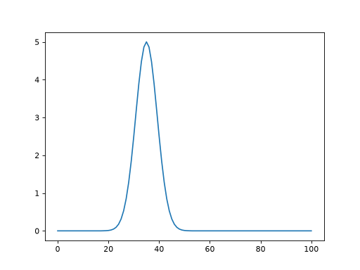


Linear¶
- power1d.geom.Linear(Q=101, x0=0, x1=None, slope=None)¶
Linearly increasing (or decreasing) continuum
NOTE: one of x1 and slope must be specified, and the other must be None.
Keyword arguments:
Q —- continuum size (int) (default: 101)
x0 —- value at starting continuum point (float or int) (default 0)
x1 —- value at ending continuum point (float or int) (default None)
slope —- rate of linear increase (float or int) (default None)
Example:
import power1d obj = power1d.geom.Linear( Q=101, x0=1.2, x1=-4.5 ) obj.plot()
(
Source code,png,hires.png,pdf)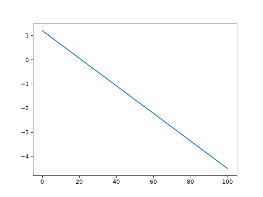


Null¶
- power1d.geom.Null(Q=101)¶
Null continuum. This is equivalent to a constant continuum with amp=0
Keyword arguments:
Q —- continuum size (int) (default: 101)
Example:
import power1d obj = power1d.geom.Null( Q=101 ) obj.plot()
(
Source code,png,hires.png,pdf)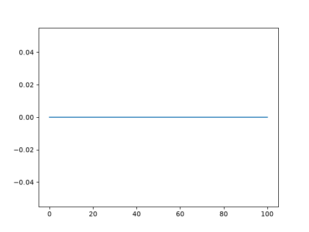


SawPulse¶
- power1d.geom.SawPulse(Q=101, q0=50, q1=75, x0=0, x1=1)¶
Linearly increasing (or decreasing) continuum, cut-off at a particular point
Keyword arguments:
Q —- continuum size (int) (default: 101)
q0 —- continuum point at which the saw starts (int) (default 50)
q1 —- continuum point at which the saw end (int) (default 75)
x0 —- value at start point (float or int) (default 0)
x1 —- value at end point (float or int) (default 1)
Example:
import power1d obj = power1d.geom.SawPulse( Q=101, q0=30, q1=80, x0=-1.2, x1=4.5 ) obj.plot()
(
Source code,png,hires.png,pdf)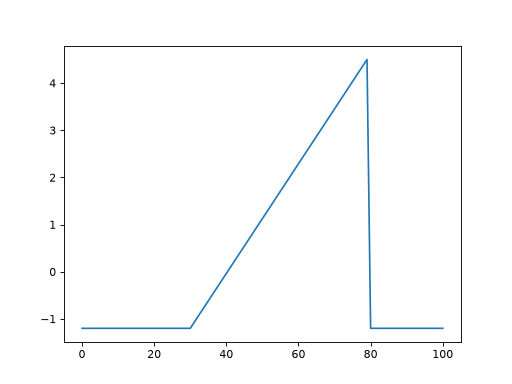


SawTooth¶
- power1d.geom.SawTooth(Q=101, q0=50, q1=75, x0=0, x1=1, dq=0)¶
Repeating saw pattern.
Keyword arguments:
Q —- continuum size (int) (default: 101)
q0 —- continuum point at which the saw starts (int) (default 50)
q1 —- continuum point at which the saw ends (int) (default 75)
x0 —- value at start point (float or int) (default 0)
x1 —- value at end point (float or int) (default 1)
dq —- inter-tooth distance (int) (default 0)
Example:
import power1d obj = power1d.geom.SawTooth( Q=101, q0=20, q1=35, x0=0.1, x1=0.9, dq=5 ) obj.plot()
(
Source code,png,hires.png,pdf)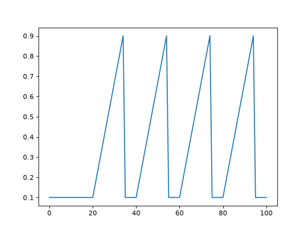


Sigmoid¶
- power1d.geom.Sigmoid(Q=101, q0=50, q1=75, x0=0, x1=1)¶
Sigmoidal step pulse
Keyword arguments:
Q —- continuum size (int) (default: 101)
q0 —- continuum point at which the step starts (int) (default 50)
q1 —- continuum point at which the step ends (int) (default 75)
x0 —- value at start point (float or int) (default 0)
x1 —- value at end point (float or int) (default 1)
Example:
import power1d obj = power1d.geom.Sigmoid( Q=101, q0=20, q1=55, x0=0.1, x1=0.9 ) obj.plot()
(
Source code,png,hires.png,pdf)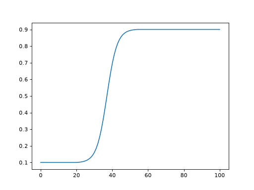


Sinusoid¶
- power1d.geom.Sinusoid(Q=101, q0=0, amp=1, hz=1)¶
Repeating sinusoidal wave
Keyword arguments:
Q —- continuum size (int) (default: 101)
q0 —- continuum point at which phase is zero (int) (default 0)
amp —- amplitude (float or int) (default 1)
hz —- frequency relative to continuum size (float or int) (default 1)
Example:
import power1d obj = power1d.geom.Sinusoid( Q=101, q0=0, amp=1.3, hz=2 ) obj.plot()
(
Source code,png,hires.png,pdf)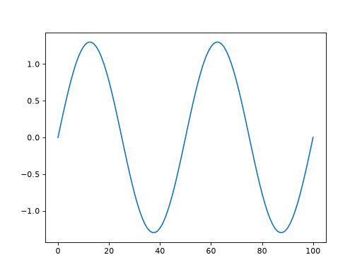


SquarePulse¶
- power1d.geom.SquarePulse(Q=101, q0=50, q1=75, x0=0, x1=1)¶
Square pulse
Keyword arguments:
Q —- continuum size (int) (default: 101)
q0 —- continuum point at which pulse starts (int) (default 50)
q1 —- continuum point at which pulse ends (int) (default 75)
x0 —- starting value (int or float) (default 0)
x1 —- pulse height (int or float) (default 1)
Example:
import power1d obj = power1d.geom.SquarePulse( Q=101, q0=50, q1=70, x0=1.3, x1=2.5 ) obj.plot()
(
Source code,png,hires.png,pdf)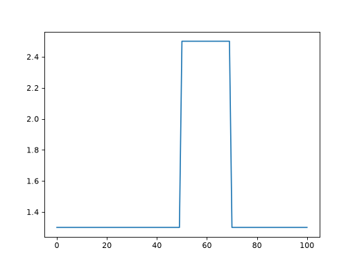


SquareTooth¶
- power1d.geom.SquareTooth(Q=101, q0=10, q1=25, x0=0, x1=1, dq=5)¶
Repeating square pulses
Keyword arguments:
Q —- continuum size (int) (default: 101)
q0 —- continuum point at which pulse starts (int) (default 10)
q1 —- continuum point at which pulse ends (int) (default 25)
x0 —- starting value (int or float) (default 0)
x1 —- pulse height (int or float) (default 1)
dq —- inter-tooth distance (int) (default 5)
Example:
import power1d obj = power1d.geom.SquareTooth( Q=101, q0=30, q1=40, x0=1.3, x1=2.5, dq=15 ) obj.plot()
(
Source code,png,hires.png,pdf)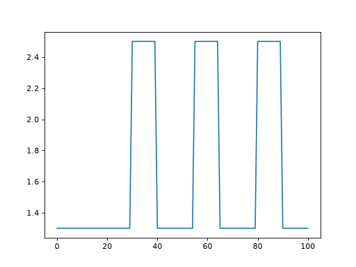


TrianglePulse¶
- power1d.geom.TrianglePulse(Q=101, q0=50, q1=75, x0=0, x1=1)¶
Triangular pulse
Keyword arguments:
Q —- continuum size (int) (default: 101)
q0 —- continuum point at which pulse starts (int) (default 50)
q1 —- continuum point at which pulse ends (int) (default 75)
x0 —- starting value (int or float) (default 0)
x1 —- pulse height (int or float) (default 1)
Example:
import power1d obj = power1d.geom.TrianglePulse( Q=101, q0=50, q1=70, x0=1.3, x1=2.5 ) obj.plot()
(
Source code,png,hires.png,pdf)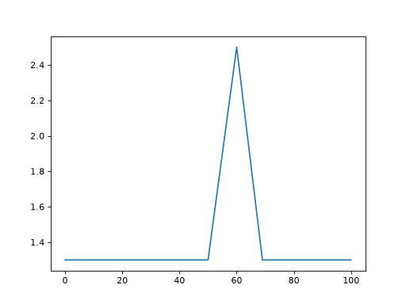


TriangleTooth¶
- power1d.geom.TriangleTooth(Q=101, q0=50, q1=75, x0=0, x1=1, dq=20)¶
Repeating triangular pulses
Keyword arguments:
Q —- continuum size (int) (default: 101)
q0 —- continuum point at which pulse starts (int) (default 10)
q1 —- continuum point at which pulse ends (int) (default 25)
x0 —- starting value (int or float) (default 0)
x1 —- pulse height (int or float) (default 1)
dq —- inter-tooth distance (int) (default 5)
Example:
import power1d obj = power1d.geom.TriangleTooth( Q=101, q0=30, q1=40, x0=1.3, x1=2.5, dq=15 ) obj.plot()
(
Source code,png,hires.png,pdf)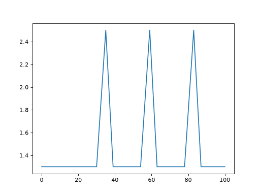